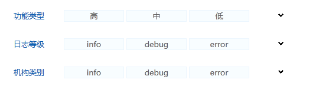

查询组件
使用$.fn.obviousbox.defaults重载默认值
依赖关系
- 无
使用方法
创建微调器
使用html标签创建微调器，只须要对<input>标签引用'easyui-spinner'类。
例子：
<div id="tt" class="kui-selected" kui-options="width:'500'"<div> <div id="aa" class="kui-obviousbox" kui-options="width:'500', typeName:'功能类型',paramName:'aa',multiple:true, data:[{id:'a_1',text:'高'}, {id:'a_2',text:'中'},{id:'a_3',text:'低'},{id:'a_4',text:'中高'}, {id:'a_5',text:'中低'},{id:'a_6',text:'中低'},{id:'a_7',text:'中低'}, {id:'a_8',text:'中低'},{id:'a_9',text:'中低'},{id:'a_11',text:'高'}, {id:'a_12',text:'中'},{id:'a_13',text:'低'},{id:'a_14',text:'中高'}, {id:'a_15',text:'中低'},{id:'a_16',text:'中低'},{id:'a_17',text:'中低'}, {id:'a_18',text:'中低'},{id:'a_19',text:'中低'}],callBack:fun"> </div>
回调函数：
function fun(data){
$("#tt").selected("setValue",data);
}
属性
| 名称 | 类型 | 描述 | 默认值 |
|---|---|---|---|
| width | number（数字） | 组件的宽度 | auto |
| height | number（数字） | 组件的高度 | auto |
| multiple | boolean | 是否支持多选 | false |
| data | 选项数据 |
方法
| 名称 | 参数 | 描述 |
|---|---|---|
| clickCallBlack | 单击选项的回调函数 | |
| options | 返回属性对象 | |
| resize | width | 重设组件宽度 |